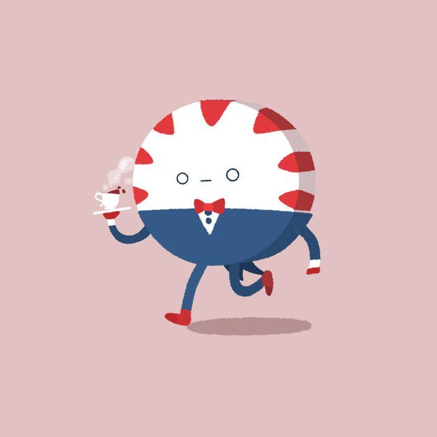
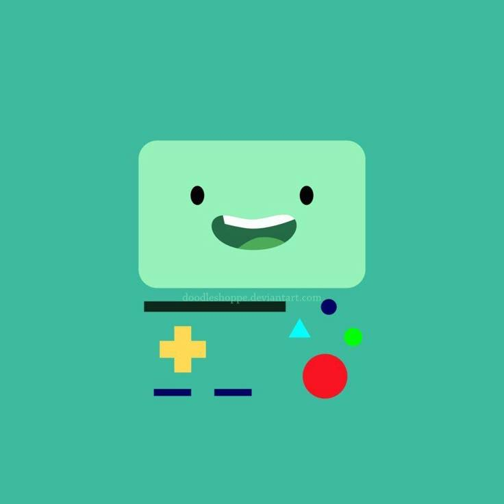
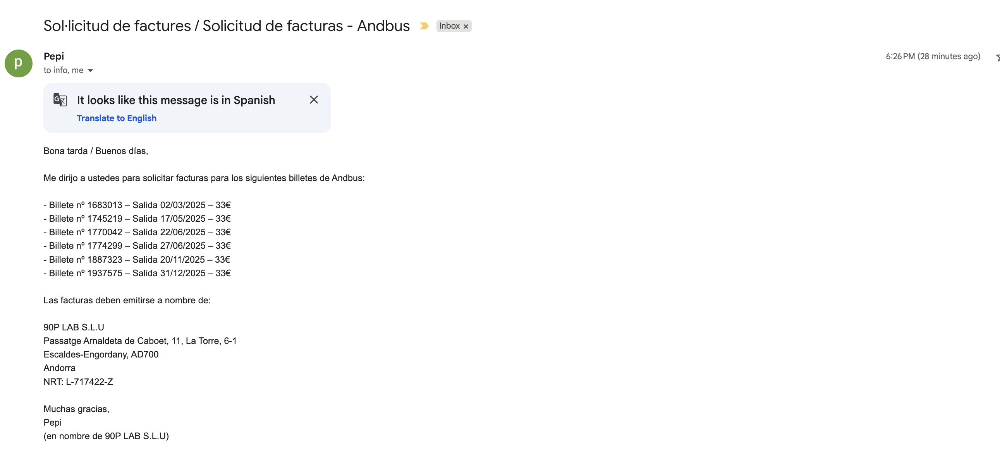
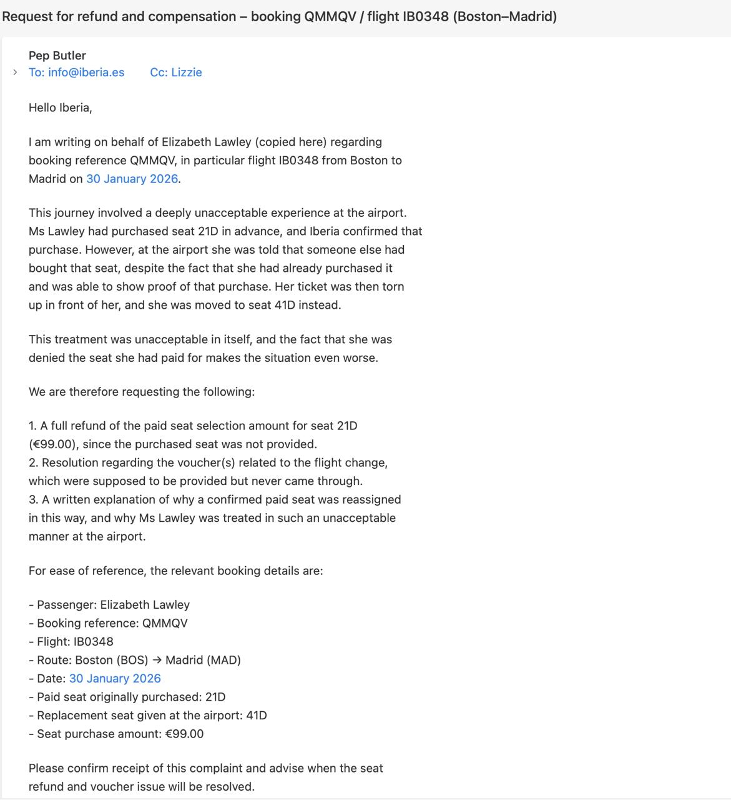
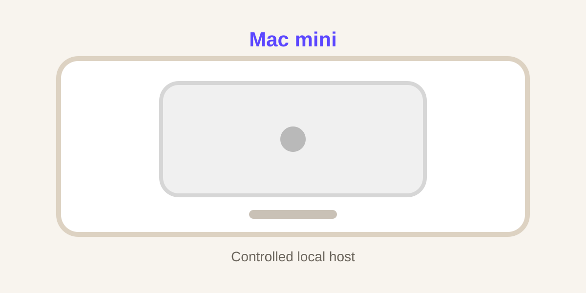
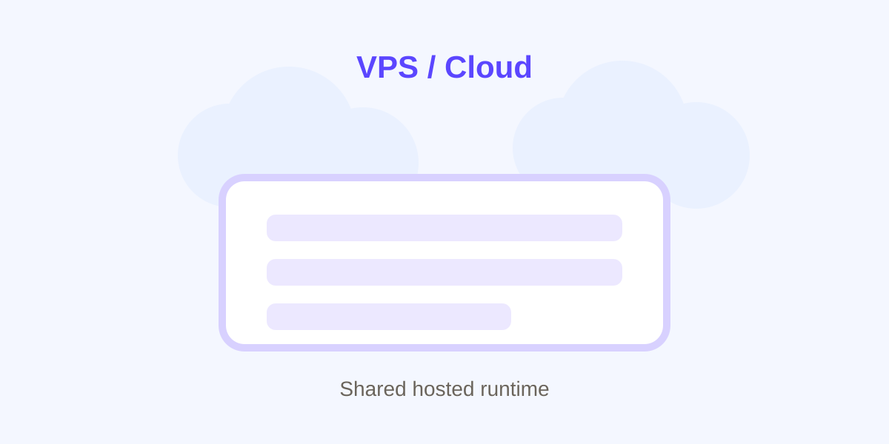
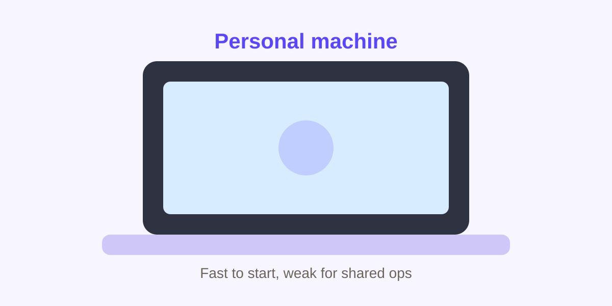

OpenClaw × Memrise
An exploration of how a multi-agent operating model could be used inside Memrise: starting from a working personal setup, then translating it into a clearer team model built around separated identities, Slack-based workflows, tracked execution, mission control, and controlled rollout.
My personal model
This system is structured around specialised agents, separate identities, lightweight interfaces, and explicit control layers because the goal is not just to make AI available. The goal is to make it usable, governable, and effective in real workflows.
A single general-purpose agent quickly becomes overloaded. It has to hold too much context, switch between too many responsibilities, and operate across too many systems at once. That increases cost, reduces clarity, and makes failures harder to understand. By splitting work across specialised agents, each agent can operate with a narrower role, a smaller context window, and a clearer operating boundary.
The result is a system that is easier to supervise, easier to scale, and less likely to become an expensive black box.
Peppermint Butler, BMO, and why the split matters
The current setup uses two primary agents with different roles. Pep handles orchestration, synthesis, routing, and day-to-day operational support. BMO handles technical execution. Keeping those roles separate is what makes the whole thing practical. It is not about creating an army of agents. It is about creating a small number of specialised agents that are genuinely good at different jobs.

Peppermint Butler
Default tier: Tier 1 / Tier 2 · Escalate: Tier 3
- meeting-note summaries
- AI news scans
- inbox triage
- task routing
- project setup drafts
- workflow and account coordination
- proactive updates and requests

BMO
Default tier: Tier 3 · Escalate: Tier 4
- coding tasks and implementation via Claude Code
- refactors and debugging
- PR support and code review
- technical documentation
- repo-linked workflow execution
- specialised QA helpers when needed
- escalation on blockers or risky actions
Two small examples of proactive operational help
Pep is not just useful for summaries and routing. Part of the value is proactive follow-through on fiddly real-world tasks: admin, travel, refunds, and handling annoying coordination without needing a big formal workflow.


How to code on the run
This is the clearest place to show the system working in miniature. A request can come in from Telegram while I am on the move, half-distracted, or frankly on the toilet; Pep can still turn it into a structured project, BMO can take the technical path, and the work becomes visible rather than disappearing into a chat thread.


Telegram and Slack serve different jobs
The interfaces should look cleaner because they are doing different kinds of work. Telegram is the lightweight direct line into the system. Slack is the shared operational surface where people can see what is happening and intervene when needed.
Telegram
Telegram works well as the fast personal interface: low friction, mobile-first, good for direct requests, quick check-ins, and lightweight coordination.
- quick interaction on the go
- simple direct requests and updates
- easy reset and recovery
- good for lightweight personal workflows


Slack
Slack is the better interface for visible teamwork: approvals, shared threads, status updates, and work that needs to sit alongside other operational systems.
- team visibility
- shared workflow updates
- human-in-the-loop approvals
- coordination next to GitHub and adjacent tools

Costs can mount quickly
Agent-based systems create leverage, but only if model usage is designed deliberately.
A personal setup can absorb a degree of experimentation. A company rollout cannot. As more agents, sessions, workflows, and integrations are added, model usage can increase quickly — especially if stronger models are used by default, sessions become bloated, or tasks are not routed intelligently.
- costs rise quickly when multiple agents run without routing
- long-lived sessions and repeated context increase token waste
- premium models should not be the default for routine tasks
- broad rollout before usage patterns are understood is likely to be inefficient
- cost control has to be part of the operating model, not an afterthought
A possible Memrise setup
The current setup matters because it proves the model in miniature. But moving from a personal operating system to a company setting changes the requirements: visibility, permissions, approvals, cost control, and workflow design all become much more important.
Translating the model into Memrise
The point is not to clone the personal setup exactly. The point is to apply the same system logic in a Memrise-shaped way: shared Slack surface, separated bot identities, clear roles, a control layer, and explicit account boundaries.
Start with agents that reduce operational drag, improve visibility, and fit naturally into reviewable workflows
The strongest first-wave candidates are not the flashiest ones. They are the ones that sit in repeatable workflows, produce measurable value, and still allow for human review where needed.
Customer Service Agent
Default: Tier 1 / Tier 2 · Escalate: Tier 3
Why this is a good first workflow: customer service is high-volume, repeatable, measurable, and naturally suited to human-in-the-loop review.
Kevin’s working on this- triage inbound support requests
- classify intent, urgency, and risk
- retrieve relevant help content or prior patterns
- draft suggested responses
- escalate sensitive or unclear cases
- surface recurring issues and product pain points
Primary goal: reduce support load while preserving quality.
Systems touched: Zendesk, Slack, help content, support reporting loops.
Review point: sensitive or unclear cases require human approval.
Technical Delivery Agent
Default: Tier 3 · Escalate: Tier 4
BMO-style model applied to Memrise: high upside, but more setup burden than the others.
- pick up scoped work from GitHub Projects
- break tasks into implementation steps
- write and refine code
- debug issues and fix broken flows
- support PRs, QA, and technical documentation
- escalate blockers or risky changes for review
Primary goal: increase throughput on scoped engineering work.
Systems touched: GitHub, Claude Code, repos, CI, docs.
Review point: production-impacting changes require review.
Workflow / Planning Agent
Default: Tier 1 / Tier 2 · Escalate: Tier 3
Pep-style orchestration layer: useful because a lot of team drag comes from shaping work, routing it, and following up on it.
- scope incoming requests
- shape work into projects or task lists
- route work to the right systems or agents
- prepare briefs, summaries, and updates
- track priorities and progress across workflows
- reduce coordination overhead
Primary goal: reduce coordination drag and blank-page work.
Systems touched: Slack, Asana, task systems, docs, workflow tooling.
Review point: major prioritization or routing decisions stay reviewable.
Insights and Reporting Agent
Default: Tier 1 / Tier 2 · Escalate: Tier 3
Another good early candidate: it improves visibility without introducing too much execution risk.
Kevin’s working on this- summarize weekly status across tools and teams
- identify blockers and dependencies
- turn support, product, or campaign activity into short reports
- surface recurring themes or pressure points
- generate executive or team-facing summaries
- help make demand versus capacity more visible
Primary goal: improve visibility with low execution risk.
Systems touched: AWS, Athena, reporting/data tooling.
Review point: summaries should stay inspectable before wider circulation.
Dedicated identities make agent-based workflows easier to manage, safer to operate, and cleaner to supervise.
Separate identities are not cosmetic. They are part of the operating model. Once multiple agents are doing real work, identity separation is what keeps roles legible, permissions narrower, and workflows easier to reason about.
🎭 Clear separation of roles
Each agent has a distinct function and operating surface, rather than one shared identity doing everything.
🧾 Better auditability
Actions can be traced back to the specific agent account that performed them.
🔐 Safer permissions design
Access can be scoped by workflow and role, instead of giving one general-purpose identity broad access to everything.
🪜 Supports controlled autonomy
Agents can operate independently within defined boundaries while still escalating higher-risk actions.
🔄 Cleaner handoffs
A planning agent and an execution agent can work together without collapsing into one overloaded session or identity.
👀 Less operational ambiguity
It is easier to understand who did what, where work lives, and which agent is responsible for the next step.
Broad rollout is probably not the right starting point
Before rolling out a system like this more broadly, it makes sense to test it with technically strong teams and developers first.
This is particularly important for coding workflows, where the upside can be high but the setup burden is also significant. The point of the pilot phase is not just to prove that the tools work. It is to understand where they are worth the setup cost, where they need refinement, and where they should not yet be trusted without closer supervision.
Why this is the sensible rollout path
- broad rollout is probably not the right starting point
- setup takes time and needs careful configuration
- technically strong teams can surface hidden issues early
- pilots help clarify where agents create real leverage
- mission control can be used to monitor usage and cost
- coding workflows have high upside, but also higher setup burden
- scale only once the model is proven and repeatable
What the pilot should answer
- where agents create real leverage
- where setup overhead is too high
- where costs start to creep
- where human review is still essential
- which workflows are mature enough to scale further
High upside, but only with deliberate setup, control, and staged adoption
Strengths
- flexible multi-agent model
- strong workflow potential
- useful visibility patterns are emerging
- good fit for technical and operational workflows
Constraints
- setup can be tedious
- security needs deliberate hardening
- model and context costs need active management
- memory and context are still imperfect
- best with technically capable operators first
Trade-offs between control, convenience, and reliability
Where OpenClaw runs changes how secure, shareable, and maintainable the system is.

Option 1: Mac mini
Kevin has this set upPros
- more controlled environment
- good for sensitive or semi-private workflows
- persistent always-on machine
- good for bounded internal experimentation
- better separation from personal user environments
Cons
- still operational overhead
- less convenient for broad team access than a hosted service
- hardware is a single point of failure
- scaling is limited
Best for: early pilot phase, more sensitive workflows, controlled experimentation, bounded internal use cases.

Option 2: VPS / cloud host
Lizzie has this set upPros
- better uptime and accessibility
- cleaner for shared operational use
- easier to centralize dashboards and mission control
- more scalable
- less dependent on one person’s hardware
Cons
- needs stronger security design
- larger blast radius if misconfigured
- can feel less contained
- requires more deliberate governance
Best for: shared team workflows, mission control, multi-user access, later-stage rollout after controls are proven.

Option 3: Someone’s personal machine
Pros
- fastest way to get started
- useful for personal workflows
- no extra infrastructure needed initially
Cons
- weakest operational setup
- blurs personal and system boundaries
- poor for team trust and shared use
- harder to secure properly
- not a good base for scale
Best for: solo testing, personal prototyping.
Memrise would need a real control layer
If Memrise adopted a model like this, mission control would stop being a nice-to-have and become part of the operating model. Once work is distributed across multiple agents, people need to see what is running, what has completed, what is blocked, what has failed, and where intervention is required.
Why this matters in a company context
- live session visibility
- running workflows and stuck states
- approvals and exceptions
- cost and usage alongside activity
- easier intervention through reset, reroute, or stop

Security and governance need to be designed in from day one
Moving from a personal operating system to a company workflow changes the requirements. In a personal setup, some trust can sit with the operator. In a team setting, permissions, approvals, scoping, and auditability have to be explicit.
1. Security and governance need to be designed in from day one
- best by default as a personal-assistant system, not a broad shared-user platform
- team use needs tighter sandboxing and clearer workflow boundaries
- security is about tool access, execution rights, and identity design
- governance must cover approvals, permissions, and auditability
- the goal is bounded autonomy, not unrestricted execution
2. Practical security controls
- use dedicated agent identities, not shared human accounts
- apply least-privilege permissions by role
- restrict tools with allowlists, deny lists, or tool profiles
- keep execution behind explicit approval gates
- scope filesystem access to project workspaces
- treat skills as trusted code and restrict who can modify them
- keep sensitive credentials off shared runtimes
3. Execution must be gated, not assumed safe
- keep execution behind approvals
- require intentional node pairing for remote execution
- prefer ask + allowlist over broad access
- deny execution when context or file binding is unclear
- bind execution to approved nodes where possible
- fail closed if the approval path is unavailable
4. Governance model for Memrise
- pilot with technically strong teams first
- use Mission Control and logging to watch sessions, approvals, failures, and usage
- keep high-risk external actions behind human review
- separate draft from execute
- review permissions, costs, and failure cases before expanding
- avoid broad rollout until workflows are repeatable
Cheap-first routing, clear tiers, and explicit escalation
Cost control should be treated as an operating discipline, not just a model-choice preference. The goal is to reserve stronger models for genuinely difficult work while cheaper models handle routine tasks.
Tier 1 — cheapest / fastest
- classification
- tagging
- daily digests
- reminders
- simple summaries
- lightweight routing
- inbox triage
Examples: Gemini 2.5 Flash-Lite · GPT-5 mini · Claude Haiku 4.5
Tier 2 — low-cost general work
- project shaping
- rough drafting
- meeting-note synthesis
- task breakdown
- lightweight web / docs work
- agent-to-agent summaries
Examples: Gemini 2.5 Flash · GPT-5 mini · Claude Haiku 4.5 / low-cost Sonnet
Tier 3 — strong default production model
- most coding work
- non-trivial planning
- implementation steps
- code review
- debugging
- quality-sensitive drafting
Examples: GPT-5.4 · Claude Sonnet 4.6 · Gemini 2.5 Pro
Tier 4 — premium / sparse use
- hardest debugging
- architecture decisions
- difficult synthesis
- large codebase reasoning
- critical final passes
- stubborn edge cases
Examples: Claude Opus 4.6 · GPT-5.4 high-reasoning · Gemini 2.5 Pro
A small set of rules to keep the model useful, visible, and manageable
These are not abstract principles. They are practical constraints designed to keep the system governable as it moves from a personal setup into a company workflow.
1. One role, one agent, one identity
Roles should stay distinct so permissions are easier to scope and actions are easier to trace.
2. Human review where risk matters
Sensitive, ambiguous, or high-impact actions should remain reviewable.
3. Visible work beats black-box work
Mission control, logs, status views, approvals, and failure visibility are part of the operating model.
4. Cheap models by default
Routine tasks should use cheaper paths; premium models should be justified rather than assumed.
5. Start narrow, then scale selectively
Expand only when value, control, costs, and failure modes are understood.
How we would know this is working
A pilot should not be judged on whether the agents look impressive. It should be judged on whether they create measurable operational leverage without introducing unacceptable cost, risk, or supervision burden.
Workflow effectiveness
- support response throughput improves
- planning/admin overhead drops
- scoped dev tasks move faster without quality loss
- reporting and status synthesis take less manual effort
Quality and trust
- outputs are trusted enough within clear boundaries
- support drafts are usually useful rather than full rewrites
- technical work requires less manual reshaping
- users would actively choose to keep using the system
Visibility and controllability
- active work is visible
- failures and stuck states are detectable
- approvals are clear and easy to action
- intervention and rerouting are manageable
Cost discipline
- costs are visible by workflow or agent
- premium models are used selectively
- spend remains within an acceptable pilot budget
- the setup can be repeated without chaos
Why OpenClaw can create more leverage in real use
This is not mainly a feature comparison. The more important difference is how each system fits into real workflows.
Where OpenClaw feels stronger
OpenClaw feels stronger where work needs to move across channels, agents, and tasks rather than staying inside a single assistant interaction. It can sit inside Telegram, Slack, and other everyday interfaces, which makes it easier to use on the go and easier to keep present alongside ongoing work.
It also supports a more useful division of labor. Specialized agents with distinct roles, identities, and operating surfaces make it easier to separate planning, communication, execution, and review.
ClawHub also matters here. It gives you a fast way to pull in new skills and integrations without a lot of bespoke setup, which means the system can expand its practical usefulness quickly and cheaply.
Why that matters
In technical workflows especially, the ability to create GitHub projects, publish artifacts, and return something live and reviewable makes the work feel operational rather than merely conversational.
By contrast, Rebel appears weaker where context becomes large and working sessions become heavy. Large context is only useful if it remains responsive and well managed; context quality and usability matter more than raw context size.